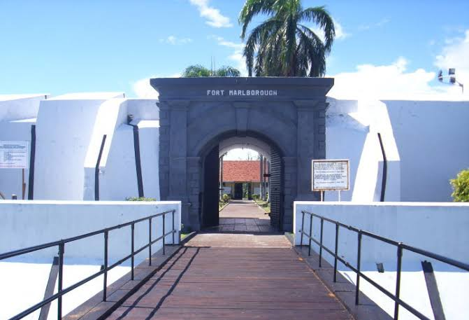
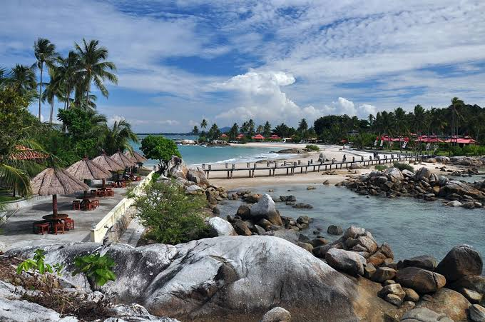

5 Tempat Wisata di Indonesia yang Cocok Untuk Destinasi Liburan Akhir Pekan
Liburan adalah salah satu cara paling jitu untuk melepas stres akibat rutinitas dan
pekerjaan yang menjemukan. Tidak perlu melancong ke luar negeri atau menghabiskan uang di pusat-pusat perbelanjaan mahal, sebab Indonesia juga punya banyak sekali tempat
menarik yang menunggu untuk segera Anda jelajahi. Dari mulai wisata laut dan pantai, pegunungan, danau, hutan, dan masih banyak lagi yang lainnya, semua bisa dengan mudah
ditemukan di Negeri Zamrud Khatulistiwa ini. Nah, dari Sabang sampai Merauke, ada daftar tempat wisata yang cocok dijadikan tujuan berlibur bersama keluarga,
antara lain:
1. Pantai Sumurtiga - Sabang
Di sini ada banyak tempat wisata menarik yang wajib Anda kunjungi, salah satunya adalah Pantai Sumurtiga yang terletak di Kota Sabang,
Provinsi DI Aceh. Pantai berpasir putih ini memiliki garis pantai yang panjang dengan air lautnya yang berwarna biru muda, lengkap dengan pepohonan
kelapa yang tersebar di sepanjang bibir pantai. Tak heran kalau banyak orang menyebut Pantai Sumurtiga sebagai Hawaii-nya Sabang. Selain berselancar
dan menikmati keindahan bawah laut dengan ber-snorkeling ria, Anda juga bisa menginap di cottage yang banyak terdapat di sekitar pantai. Asyik sekali, bukan?
2.Ngarai Sianok Bukittinggi
Ya, kota dengan relief alam berbukit-bukit ini memang memiliki banyak tempat wisata
cantik yang sayang untuk dilewatkan, salah satunya adalah Ngarai Sianok. Bagi yang belum tahu, Ngarai Sianok merupakan sebuah lembah sempit dengan bukit-bukit bertebing
curam di sekelilingnya. Di tengah lembah ini mengalirlah sungai kecil yang membuat pemandangan semakin menakjubkan. Di sini, selain bersepeda, trekking, atau berjalan-jalan
ringan, Anda juga bisa berdiam diri menikmati ketenangan yang ditawarkan Ngarai Sianok. Karena suasananya yang menenangkan itulah tempat wisata ini juga disebut Lembah
Pendiam. Jika punya kesempatan menjelajah Bukittinggi, jangan lupa mampir ke sini, ya!
3.Fort Marlborough Bengkulu

Jika kebetulan Anda sedang berada di Bengkulu dan menyenangi tempat wisata
bernuansa sejarah, cobalah berkunjung ke Benteng Fort Marlborough, yang terletak di Teluk Segara, Kebun Keling, Bengkulu. Sedikit informasi, bangunan ini merupakan
benteng peninggalan Inggris dan dibangun oleh EIC (East India Company) pada tahun 1713. Tujuan awal pembangunan benteng ini adalah sebagai titik pertahanan Inggris
dari serangan musuh. Menurut cerita, Benteng Fort Marlborough merupakan benteng terkuat kedua di wilayah Timur yang pernah dibangun Inggris. Setelah berpindah tangan
dari pemerintah Inggris ke Belanda, Belanda ke Jepang, Jepang ke Indonesia, sampai kembali diduduki oleh Belanda, benteng ini pun akhirnya resmi dikelola oleh Depdikbud
setempat untuk dipugar dan dijadikan sebagai cagar budaya. Jika berniat ke sini, datanglah antara pukul 08.00 pagi sampai 17.00 sore, sebab tempat wisata ini hanya dibuka
untuk umum pada jam-jam tersebut.
4. Pantai Para Tenggiri - Bangka Belitung

Anda tentu sudah pernah menyaksikan film fenomenal Laskar Pelangi yang berlatar
di Pulau Belitong, bukan? Selain alur cerita, apa yang menarik dari film itu? Ya, tentu saja lokasi pengambilan gambarnya. Di Belitung (orang setempat biasa menyebutnya
Belitong) memang banyak terdapat pantai cantik dengan batu-batu sebesar rumah yang tersebar di bibir pantai, salah satunya adalah Pantai Parai Tenggiri. Berbeda dengan
pantai lain pada umumnya, Parai Tenggiri memiiki struktur pantai yang landai dengan air laut berwarna hijau toska serta pasir putihnya yang lembut. Tidak hanya itu,
ombak pantai yang tenang juga menjadi alasan wisatawan yang senang dengan kegiatan berenang. Selain berenang, Anda juga bisa memancing, parasailing, menyelam, snorkeling,
dan masih banyak lagi yang lainnya. Ayo, liburan ke Bangka Belitung!
5. Kepulauan Seribu - DKI Jakarta
Jakarta ternyata tidak melulu soal macet, gedung-gedung pencakar langit,
hotel dan pusat perbelanjaan mewah, lho. Jika mau bergeser sedikit ke arah utara di Kepulauan Seribu, Anda akan menemukan Jakarta yang berbeda. Ya, di sini terdapat
sebuah tempat wisata bertajuk Taman Nasional Kepulauan Seribu yang tidak hanya dijadikan sebagai zona konservasi, tapi juga tempat wisata. Selain itu, Kepulauan seribu
juga memiliki banyak pulau cantik yang sangat cocok dijadikan destinasi liburan akhir pekan, beberapa di antaranya adalah Pulau Kahyangan, Pulau Pabelokan, Pulau Bidadari,
Pulau Onrust, dan masih banyak lagi yang lainnya. Karena air lautnya jernih dan berpasir putih, tempat ini merupakan spot yang sangat cocok untuk menyelam, snorkeling,
dan aktivitas air yang lainnya. Untuk mencapai Kepulauan Seribu, Anda harus menyeberang menggunakan kapal yang disediakan di Pelabuhan Ancol selama
3 jam perjalanan.